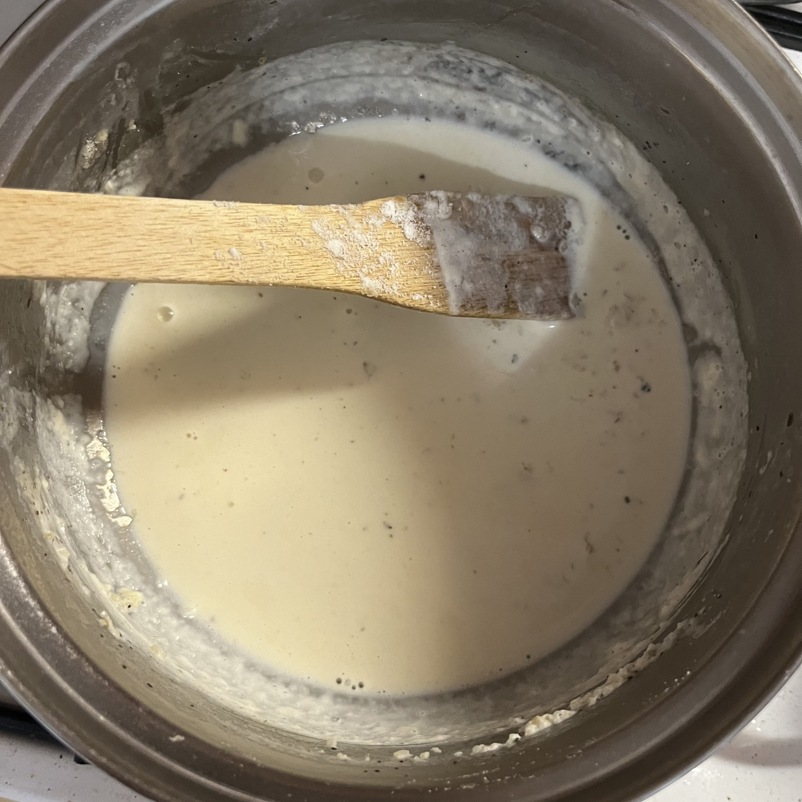
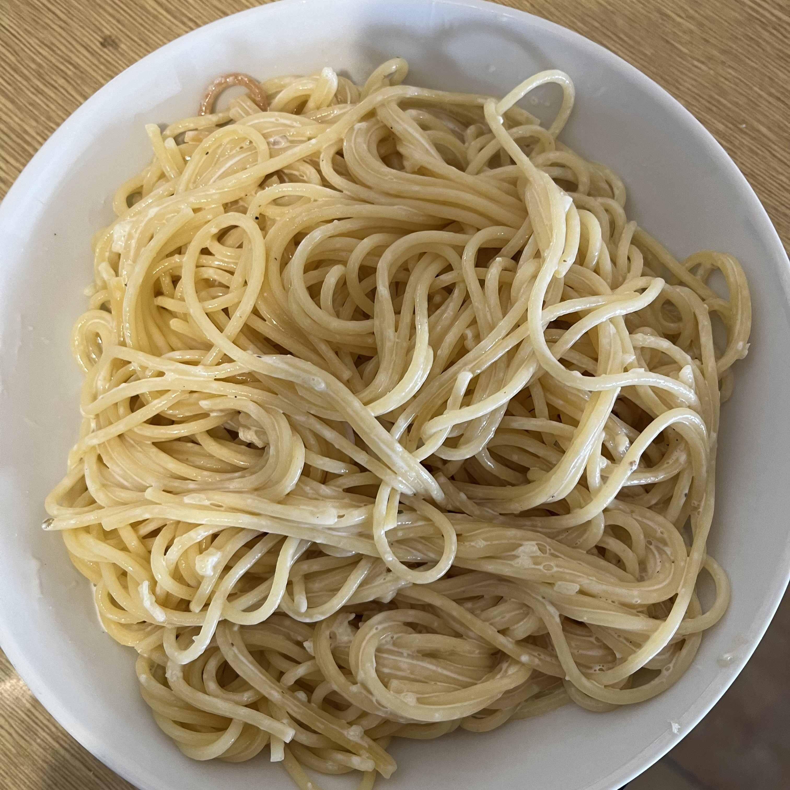

Špagety s cesnakovou omáčkou


Postup:
-
Špagety si uvaríme podľa návodu a necháme bokom. Pri varení špagiet však nesmieme zabudnúť na soľ.
-

Vedľa v hrnci dáme opražiť 5 strúčikov cesnaku na drobno s kvapkou oleja. Pridáme 250 ml smotany na varenie, čierne korenie a trocha soľ a varíme chvíľku aby trochu zhustla, poprípade pridáme čajovú lyžičku hľadkej múky na zahustenie.
-
Pre dodatok chuti si nakrájame 3 cherry rajčiny na jednu porciu. Môžeme však použiť akúkoľvek zeleninu alebo nechať cestoviny tak, ako sú.
-

Špagety polejeme hotovou omáčkou a pridáme cherry rajčiny a môžme podávať.
Tipy a triky:
-
Do omáčky, si môžeme dať aj trochu mlieka aby sme ju nemali až tak hustú.
-
Omáčka sa nemusí variť dlho, podstatou je aby sa cesnak čo najviac opražil na začiatku.